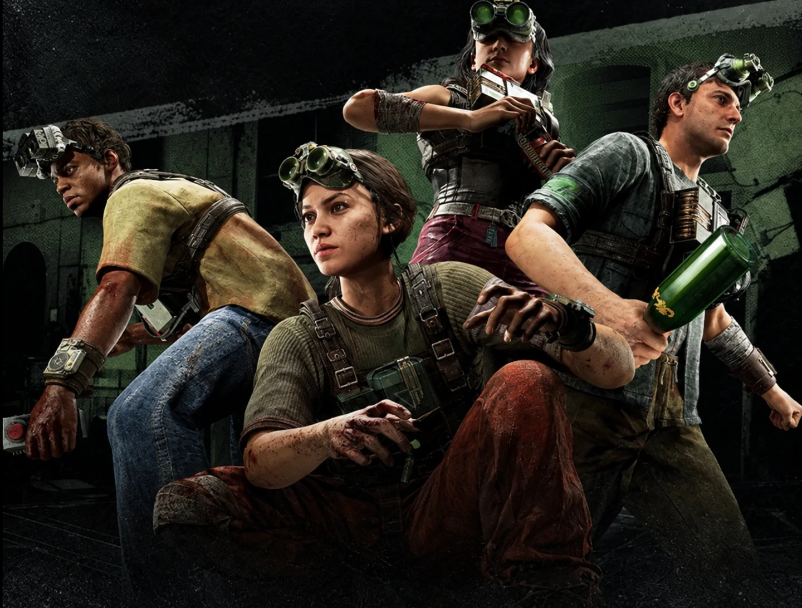

Реагенты
Игровые персонажи
Локация: Объект Синьяла
Статус: Испытуемые
Реагенты (ориг. Reagents) — главные герои игры The Outlast Trials, многочисленные обманутые испытуемые проекта «Тенева 2», ради обещанного освобождения проходящие испытания Меркофф на объекте Синьяла.
The Outlast Trials
Предыстория
В 1958 году Корпорация Меркофф на секретном объекте Синьяла в Аризоне запускает проект «Тенева 2», где испытуемые должны проходить испытания, где путём неявного внушения их запрограммируют стать специальными агентами. Под видом благотворительности Меркофф открывает в городах по всей стране благотворительные центры, где якобы оказывают помощь людям с низким социальным статусом. Реклама была очень информативной, и все узнали про подобные центры.
Многие несчастные, такие как безработные, бездомные, алкоголики и прочие иные люди с низким социальными статусом начали обращаться в благотворительные центры Меркофф. Однако там сотрудники Меркофф похищали этих людей и доставляли на объект Синьяла в качестве испытуемых реагентов для участия на испытаниях. Начиная с лета 1958 года люди нескончаемо обращались в центры Меркофф, и практически всех их превращали в реагентов.
Вводное испытание
По прибытию на объект Синьяла реагента-новичка доставляют в лабораторию и приковывают к стулу, где он видит все окружающие его ужасы, которые творили с людьми сотрудники Меркофф. Доктора вводят реагенту-новичку лекарство и включают для него начальное обращение директора проекта доктора Хендрика Джолиета Истермана, объясняющего, что испытуемому не стоит бояться, ведь дальнейшие испытания сделают их всех лучше.
После этого одна из сотрудниц Меркофф показывает реагенту-новичку коробку с его персональными данными, а затем просит согласиться со всеми условиями. В этот момент другой сотрудник Меркофф просто качает голову пленника своей рукой, заставляя его автоматически согласиться. После этого они надевают реагенту-новичку прибор ночного видения и болезненно вживляют ему в череп с помощью сверла.
Реагент приходит в себя на полигоне «Особняк», где он начинает своё первое испытание. Через различные оставленные записи реагент-новичок больше узнаёт о докторе Истермане, который своего рода готовил испытуемого к будущим трудностям проекта. Именно на этом полигоне все реагенты впервые встречают экс-попов. Они были испытуемыми закрытой первой фазы «Теневы», целью которых было выслеживать и убивать всех реагентов на протяжении всех испытаний.
Помимо реальных недоброжелателей, реагент-новичок из-за распыления пушера получает психоз и начинает видеть нереального, но опасного Скиннермэна. Ближе к концу вводного испытания было необходимо найти 2 коробки с его публичной и личной информацией, которые он после нахождения уничтожает в промышленном измельчителе. После завершения обучающего испытания, в шаттле по пути в комнату отдыха включается новое обращение доктора Истермана, который объясняет новичку, что это прекрасно, когда всё происходящее находится под контролем.
Комната отдыха
В комнате отдыха у реагентов есть время отдохнуть в своих индивидуальных камерах, а также приобретать амфы и рецепты, а также снаряжения, которые в дальнейшем можно улучшать. Всё это можно сделать у специалистов: реагента Доррис Риттер, медсестры Эмили Барлоу и инженера Корнелиуса Ноукса. Все эти вещи реагенты приобретают за ваучеры, которые они получают в ходе повышения уровня.
Реагенты могут изменять свою одежду и внешний вид, а также интерьер своей личной камеры. Однако одежда и вещи интерьера случайно выдаются им за прохождения испытаний. Также за прохождение испытаний и выполнение дополнительных задач реагентам платят марки, с помощью которых они могут покупать вещи и предметы с каталогов. За временные испытания реагенты получают жетоны событий, которые они могут потратить на ограниченные временем каталоги. На территории комнаты отдыха также есть игровые развлекательные зоны, где реагенты могут поиграть друг с другом в армрестлинг, шахматы, тест струпа и терминальный теннис.
В комнате отдыха находится терминал для вызова шаттла, на котором реагенты могут отправиться на любое выбранное из перечня испытание. Напротив шаттла с другой стороны комнаты отдыха находится проход на последнее испытание «Перерождение». Охранник Меркофф с интервалом впускает туда только тех реагентов, которые в ходе прохождения испытаний смогли заработать 100 жетонов освобождения.
Погибшие реагенты
Окончательно умершие реагенты в большинстве случаев используются сотрудниками Меркофф в качестве декораций на полигонах. Некоторые погибшие во время испытания реагенты оставлялись на полигоне в том же положении. Однако единицы таких реагентов всё ещё живы, когда на испытании участвует уже новая группа. Иногда такие выжившие могут попробовать быстро забрать свой предмет, если реагент попытался взять что-то с тела. Как правило, они всё равно умирают по ходу уже не своего испытания.
Большинство погибших реагентов или то, что от них осталось, в конечном итоге сливаются в помещение для биоотходов, где они разлагаются одной братской могилой. Однако корпорация Меркофф также имеет в наличии специальные мясорубки, перемалывающие тела полностью. После такого процесса человеческие останки практически невозможно опознать.
Внешний вид и кастомизация
Реагенты имеют возможность изменять свой внешний вид и кастомизировать личную камеру. Всё это доступно в комнате отдыха через специалистов и терминалы.
Известные реагенты
Интересные мелочи
- В отличие от предыдущих протагонистов серии, реагенты являются первыми, чьи лица видны.
- Реагенты первые протагонисты в серии, которые могут выламывать закрытые двери, а также использовать метательное оружие против своих противников.
- Салливан Нот, главный антагонист игры Outlast 2, был реагентом, известным как «Реагент 1616».
- Реагенты это первые протагонисты, которых игрок может кастомизировать и одеть по своему усмотрению.
- Если игрок выбрал женского персонажа, то реагенты это первые протагонисты женского пола.
- В закрытом бета-тесте игры реагента мужского пола озвучивал Шон Байчу, который ранее также озвучил главных героев Outlast, Outlast: Whistleblower и Outlast 2.